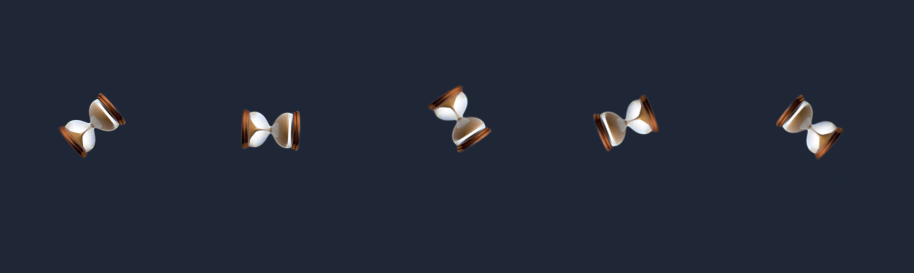
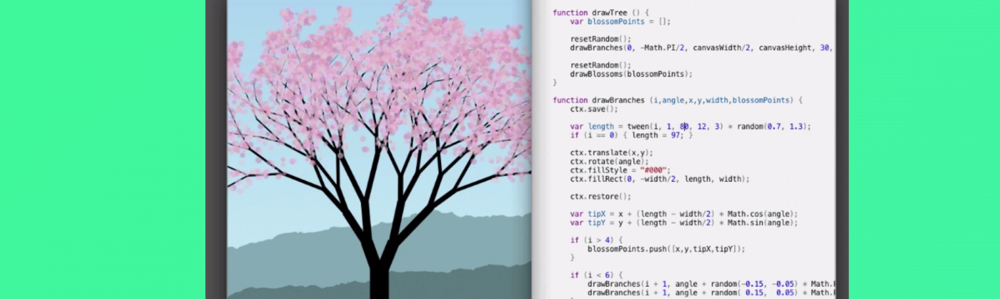
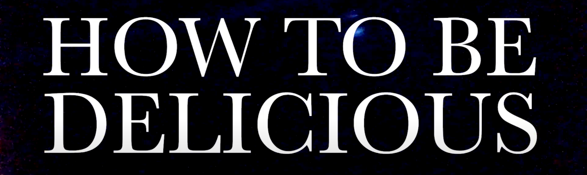

The weekly TODEPOND PONDCAST is for paying supporters only.
Please only listen / read if you've
paid
:)
Welcome, again, to the...
🐸 TODEPOND PONDCAST 🐸
What's new this week?
In my continued explorations of radical simplicity, as part of the tadi web, I continue to make tiny little experiments, and I share them in my tadi lab.
This week, I made a little experiment that got a little more attention than usual. It's called Login, and you can log in to it by typing in a username and a password, as long as the username isn't already taken.
When logged in, you can update your status, which might sound like a familiar feature if you've ever used twitter or facebook. But Login is different! Because you can only ever have one status. When you write a status, it replaces the old one.
Another way it's different is that it looks like crap!
It was fun to make. It's a de-make of a microblogging site, using some scrappy tricks I've learned from my tadi web practice. People seemed to really enjoy using it too! And the funnest part for me is that... the code is so basic and minimal that lots of people have been submitting pull requests for it, adding custom styles and stuff to their name. I have a lot of pull requests to look through straight after recording this pondcast.
Last week I told you that my essay on Arroost got accepted for LIVE, which is taking place later this year.
Today, let's start looking through some of the feedback I got! We'll start with the simplest and gradually get to the more complex and nuanced responses over the coming weeks
Here we go...
In the essay, I make the case for more limited tools, where there is less choice, like tldraw's limited colour palette picker. It means you spend less time wasting time, obsessing over trying to pick the perfect colour, and instead you just pick one and get back to creating things.
Reviewer A had some concerns with this mentality. Here's what they wrote:
Sometimes the seemingly minor "obsession" work of finding the right color or arranging things on a canvas (when it doesn't really matter how they're arranged) can itself be relaxing (not always but can be). Japanese rock gardening is a great example of this. So there is an argument that "designing for emotion" or "feeling" more broadly is not what is being argued for here.
And, yes, the reviewer is correct. My essay is not about "improving your emotions". My essay is only about "removing your emotional blockers", which is a very different task. I even wrote a paragraph about this difference, entitled "Feeling good is not enough". I'll read it to you now:
I do see many researchers trying to make tools that "feel good". But that's not enough. Sometimes, feeling good is not the same as feeling free from emotional blockers. Tackling your emotional needs is sometimes uncomfortable— it can be hard— it can make you feel bad, or frustrated, but I think it's worth it.
Removing emotional blockers can feel bad. It can feel very unrelaxing or anxiety-inducing, because it often involves going outside your comfort zone.
It all depends on your goals. Do you want to help the user feel good? Or do you want to help them create something? These are not the same.
Anyway, Reviewer A's feedback was very helpful because it shows me that I wasn't clear enough about this distinction. In the presentation, I'll try to be upfront about this :)
Torn leaf!
Do you remember Torn Leaf? I announced it ages ago and I've got loads of amazing submissions. (Thank you everyone). So you might be wondering what's happening with it. Where is the exhibition? Where is Torn Leaf Zero?
Well, the truth is that the collective submissions ended up being so good that I felt like I really needed to do them justice in some way. My original very low-fi plans no longer matched up with the quality and breadth of the submitted works. So I've been doing a lot of figuring out of what to do.
And I now have plans in place!
I am making a "virtual gallery opening" video to introduce the online exhibition, in the spirit of the kinds of things the Met and Tate Modern put out. There's a real nice vibe to that genre of video and I've been watching and studying them all. Torn Leaf's opening will be a kind of parody or variation on that usual format.
For a while, I was wondering if Torn Leaf's whole exhibition needed to be a single video. It would be a guided tour of the entire thing, walking you through each piece from start to finish. But that always felt like a shame to me. I want the submissions to stand on their own, and not just be part of a bigger piece of media. I didn't want them to get squished up into a megamix of sorts.
No, instead, the video will be a welcoming teaser, signposting the viewer to the online gallery page, hinting towards some of the significance of various pieces, or parts of the project.
It will feature small snippets of works, and the context that brought them together.
But words are cheap! I need to make the thing now. I have a clear vision now, and I'll do my best to execute it.
Step one: Make and publish the teaser for the next video,
Top 99 Ways To Make Sand.
Step two: Wrap up and
publish Torn Leaf Zero.
Thank you for your patience as always! And thank you for all your support throughout this journey. I really can't thank you enough. Wherever you are, whatever you're doing, I hope you have a great week. 🐸
Days since tode fell asleep: 607Back to the pondcast.